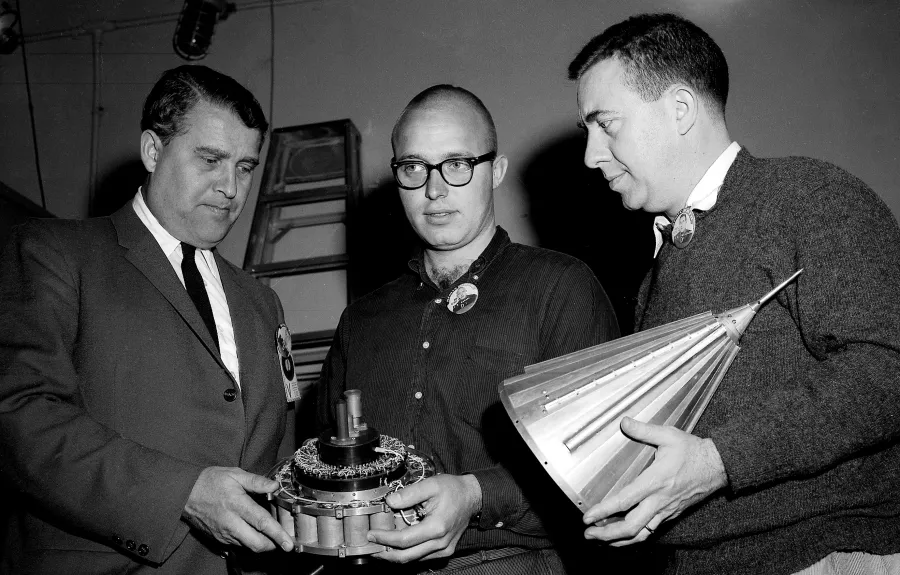
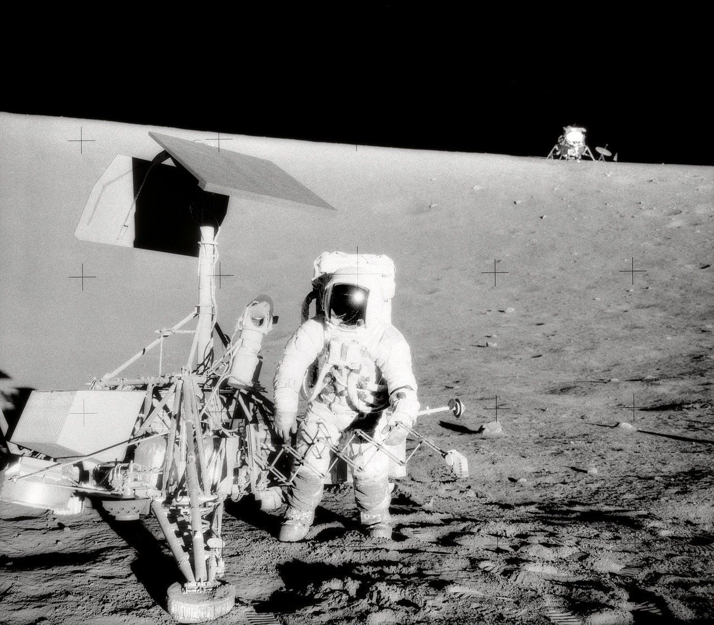
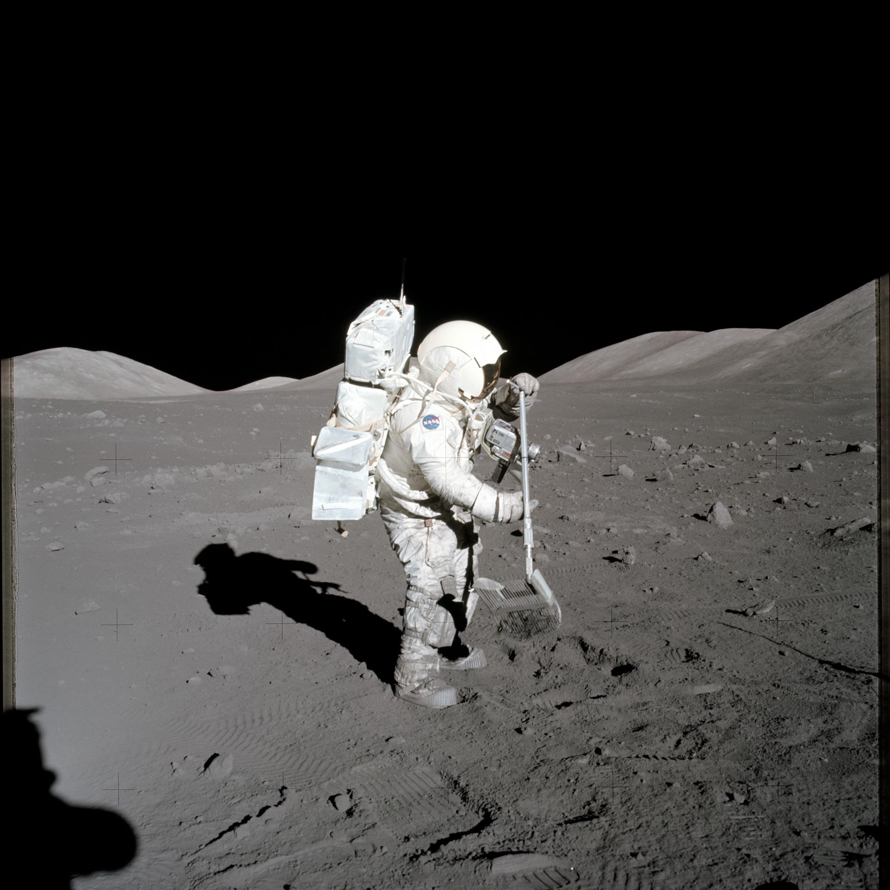

From lighting up our skies to preserving evidence of our solar system’s history, Earth’s closest neighbor plays a pivotal role in the study of our planet and beyond.

DR. VON BRAUN LOOKING AT PAYLOAD OF JUNO II AM-14, PIONEER IV SATELLITE. MARCH 1, 1959 REF: MFL-59-293.1 (MIX FILE)

The Apollo 12 astronauts examined the Surveyor 3 spacecraft during their second extravehicular activity (EVA) on the Moon on Nov. 20, 1969. Robotic Surveyor spacecraft pioneered the technology that enabled Apollo astronauts to reach the moon.

AS17-134-20425 (11 Dec. 1972) --- Scientist-astronaut Harrison H. Schmitt, lunar module pilot, collects lunar rake samples at Station 1 during the first Apollo 17 extravehicular activity (EVA) at the Taurus-Littrow landing site. This picture was taken by astronaut Eugene Cernan, commander. The lunar rake, an Apollo lunar geology hand tool, is used to collect discrete samples of rocks and rock chips ranging in size from one-half inch (1.3 centimeter) to one inch (2.5 centimeter).